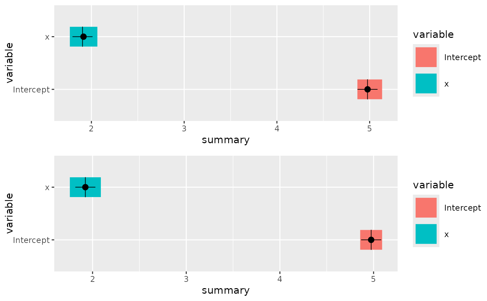

Arguments
- x
a prediction object.
- y
Ignored argument but required for S3 compatibility.
- ...
Arguments passed on to
gg.prediction().
Examples
# \donttest{
if (bru_safe_inla() &&
require(sn, quietly = TRUE) &&
require(ggplot2, quietly = TRUE)) {
# Generate some data
input.df <- data.frame(x = cos(1:10))
input.df <- within(input.df, y <- 5 + 2 * cos(1:10) + rnorm(10, mean = 0, sd = 0.1))
# Fit a model with fixed effect 'x' and intercept 'Intercept'
fit <- bru(y ~ x, family = "gaussian", data = input.df)
# Predict posterior statistics of 'x'
xpost <- predict(fit, NULL, formula = ~x_latent)
# The statistics include mean, standard deviation, the 2.5% quantile, the median,
# the 97.5% quantile, minimum and maximum sample drawn from the posterior as well as
# the coefficient of variation and the variance.
xpost
# For a single variable like 'x' the default plotting method invoked by gg() will
# show these statisics in a fashion similar to a box plot:
ggplot() +
gg(xpost)
# The predict function can also be used to simultaneously estimate posteriors
# of multiple variables:
xipost <- predict(fit,
newdata = NULL,
formula = ~ c(
Intercept = Intercept_latent,
x = x_latent
)
)
xipost
# If we still want a plot in the previous style we have to set the bar parameter to TRUE
p1 <- ggplot() +
gg(xipost, bar = TRUE)
p1
# Note that gg also understands the posterior estimates generated while running INLA
p2 <- ggplot() +
gg(fit$summary.fixed, bar = TRUE)
multiplot(p1, p2)
# By default, if the prediction has more than one row, gg will plot the column 'mean' against
# the row index. This is for instance usefuul for predicting and plotting function
# but not very meaningful given the above example:
ggplot() +
gg(xipost)
# For ease of use we can also type
plot(xipost)
# This type of plot will show a ribbon around the mean, which viszualizes the upper and lower
# quantiles mentioned above (2.5 and 97.5%). Plotting the ribbon can be turned of using the
# \code{ribbon} parameter
ggplot() +
gg(xipost, ribbon = FALSE)
# Much like the other geomes produced by gg we can adjust the plot using ggplot2 style
# commands, for instance
ggplot() +
gg(xipost) +
gg(xipost, mapping = aes(y = median), ribbon = FALSE, color = "red")
}
#> Current num.threads is '1:1'.
#> No num.threads change needed.

 # }
# }